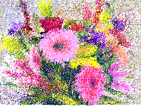

Three Apples and a Persimmon
This self portrait was developed online during march of 1995. I posted it while still a line sketch. Every four nights I would work more on it.
This painting is titles "Flowers from MaryAnn". MaryAnn is deeply interested in art on the Web. We exchange ideas. It is fun. One day she sent me these flowers. They were so beautiful. Both they and my memory of them faded; but there remains this drawing and a certain essence in my heart.
This is the (TRI) triangular traffic island which divides West Broadway (BE) below (CA)Canal in my neighborhood of TRI-BE-CA in New York City. One night as I walked up to SOHO I saw how beautiful the trees looked illuminated by the city lights. I came home and drew this from fresh memory. It too can fade.
If you wish to know a bit about me and my thoughts on painting read the "Short Biography" or the "Long Biography" or my "An Aesthetic View." You can also read the "The Resume" and the essay "Abstraction and Illusion."
Copyright, Samia A. Halaby, 1998, All rights reserved.
Select from the following menu representing the entire studio:
Chapter I ... Grandmother, ... Chapter II ... Beisan, ... Chapter III ... Jerusalem, ... Chapter IV ... Sabah, ... Chapter V ... Yafa, ... Chapter VI ... Khader, ... Chapter VII ... Vera, ... Chapter VIII ... Students, ... Chapter IX ... Taxi, ... Chapter X ... Doctor, ... Chapter XI ... Hasan, ...


![[Art on the Net]](/images/artnet_button.gif)
![[Gallery]](/images/gallery_button.gif)
![[Studios]](/images/studios_button.gif)
![[What's New]](/images/whats_new_button.gif)